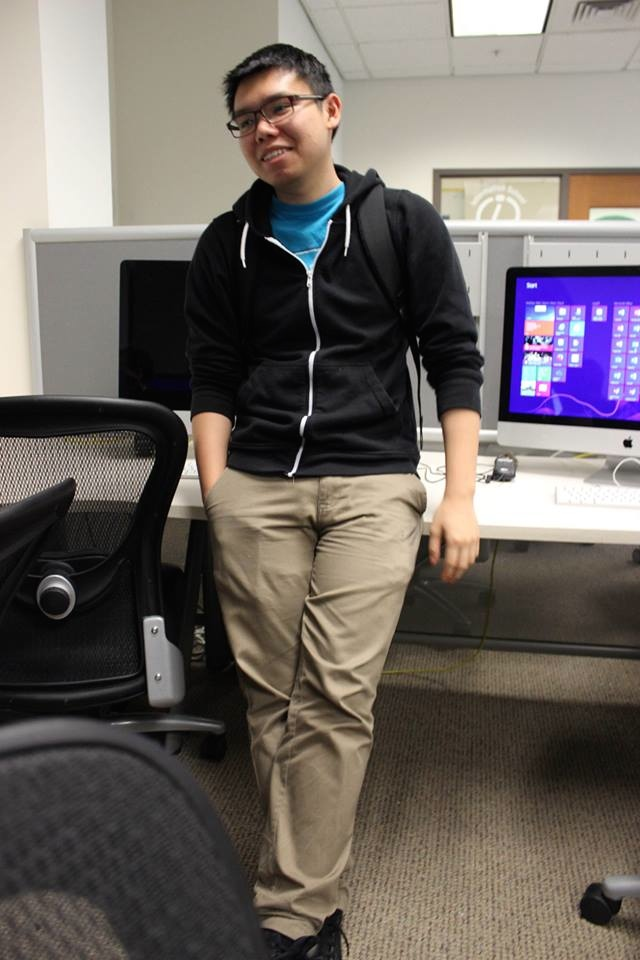

What is iUGA?
The Informatics Undergraduate Association (IUGA) is a Registered Student Organization that functions as a student government for Informatics students. iUGA provides official channels for communication between the Informatics undergraduate student body and the faculty and administration of the Information School. iUGA promotes the interests of, and acts as an advocate for current and prospective Informatics students in/to the Information School at the University of Washington. We provide an opportunity for social, educational, and professional activities for the Informatics student body. iUGA and its members are actively involved in the Information School community. It is the responsibility of iUGA to provide its members with the tools to help them both in their undergraduate studies and beyond, as well as to foster a greater sense of community within the Informatics program.
Who are the officers?
Stephen Ramirez
President
The president's role is to call all member meetings of the Association and preside over them, be responsible for the administration of any business of the association, represent the Informatics student body in meetings with the faculty, hold transitional meetings with past and present directors, and be the spokesperson for the association.
Marissa Ho
Vice President
The vice president organizes and/or delegates responsibility for social events, maintains and promotes community outreach with assistance of the Director of Public Relations, oversees all committees and projects, and reports their status to the board weekly. He/she also assumes the duties of the president in his/her temporary absence.
Lina Thatch
Director of Finance
The director of finance maintains the Association’s financial records, provides monthly financial reports to the associations’ executive board, organizes and delegates responsibility for annual fundraising events, submits budget and obtains annual funds from the Information School, and serves as primary account handler for all financial transactions.
Jen Maurer
Director of operations
The director of operations' role is to maintain the Association’s records and calendar, take minutes at the Association’s meetings and distribute them to the Association’s members, verify all votes for the elections, and communicate announcements within the Association to its members when representing the executive officers.
Zach Balter
Director of Public Relations
The director of public relations serves as a public relations contact, promotes the Informatics program to the University and the business community at large, and organizes activities for the Association’s members involving the professional community.

Warner Chen
Outreach Coordinator
The outreach coordinator serves as secondary relations contact focused on external communication, assists the public relations officer in promoting Informatics Program and/or employment opportunities, and is the primary point of contact to the development office concerning Alumni Relations.
Membership
Membership eligibility in IUGA is held by matriculated declared Informatics majors as defined by the Information School and the University of Washington. Members must also be in good disciplinary standing as outlined in the Student Code at the University of Washington
Contact Us
Have a comment, question, or suggestion?
Email us at: iUGA@uw.edu